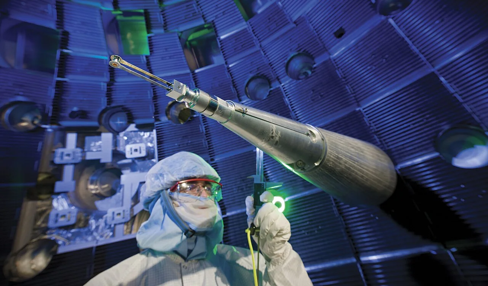
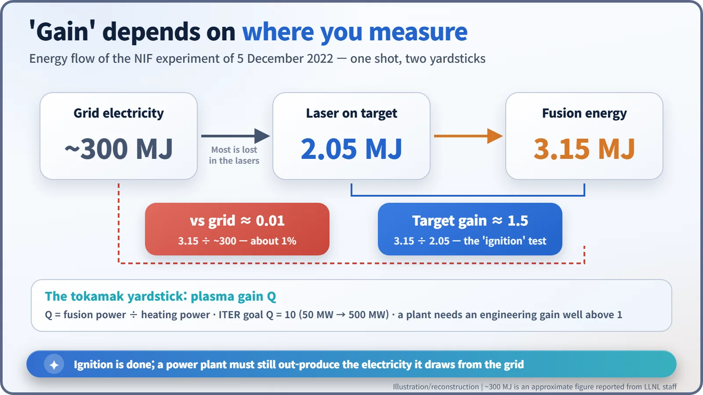
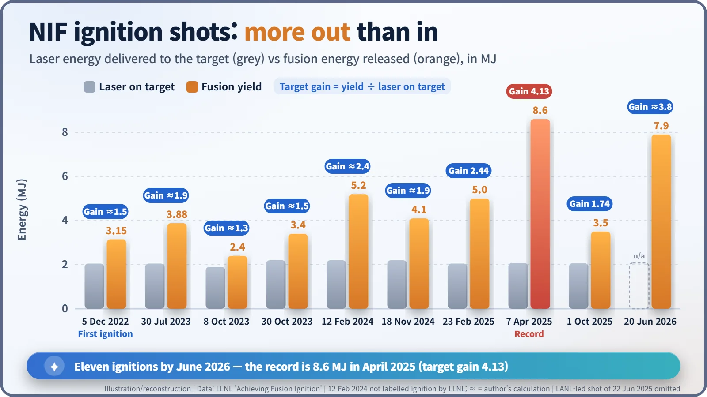
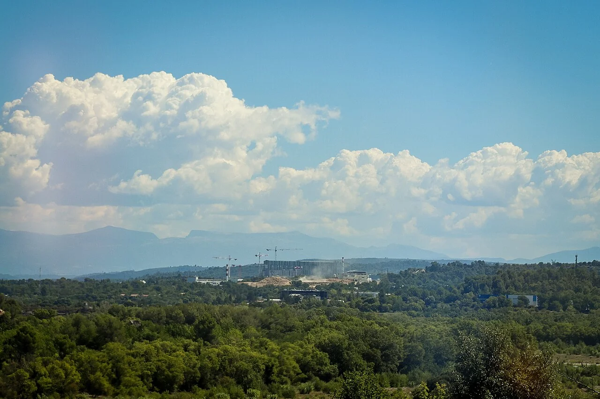

Nuclear History · 289
More Out Than In — NIF Fusion Ignition (2022), ITER and the Fusion Milestones of the 2020s
A gold can the size of a pencil eraser, eleven laser ignitions, record-long tokamak plasmas and a slipping ITER schedule: what fusion has and has not achieved.
On 5 December 2022 the National Ignition Facility in California got 3.15 MJ of fusion energy out of a target hit by 2.05 MJ of laser light, the first laboratory "ignition". By June 2026 it had done so eleven times, with a record target gain of 4.13. Magnetic machines set endurance records and ITER's schedule slipped to 2039, but no fusion device has yet returned more electricity than it draws from the grid.
A gold can the size of a pencil eraser
Picture a gold cylinder about the size of the eraser on the end of a pencil. Inside it sits a capsule no bigger than a peppercorn, and inside the capsule is a thin layer of frozen hydrogen fuel. In the small hours of 5 December 2022, at the National Ignition Facility (NIF) of Lawrence Livermore National Laboratory (LLNL) in California, one of these tiny targets settled a question that fusion researchers had been chasing for decades. For the first time in a laboratory, more fusion energy came out of the target than the laser energy that went in. [1]
The energy that was always thirty years away
Fusion gets energy by joining light nuclei together. That is the opposite of the fission in today's nuclear power plants, which split heavy uranium nuclei apart. By the 1990s, doughnut-shaped magnetic machines called tokamaks had already burned real deuterium-tritium fuel and produced several megawatts of fusion power, but never as much as was put in to heat the plasma. Hence the old joke: fusion power is thirty years away, and always will be.
192 beams: 2.05 MJ in, 3.15 MJ out
NIF does not use magnets. It uses light. Its 192 laser beams converge on the inside walls of the gold cylinder, called a hohlraum, at the centre of a target chamber 10 metres across. The walls turn the laser light into X-rays, which crush the fuel capsule evenly from all sides. For a split second the deuterium (D) and tritium (T) nuclei are squeezed so hard that they fuse, giving helium and a neutron and releasing 17.6 MeV per reaction. [4]

On that December night the lasers delivered 2.05 megajoules (MJ) to the target, and the target released 3.15 MJ of fusion energy. The US Department of Energy announced the result on 13 December 2022 as the first laboratory demonstration of fusion "ignition". One megajoule is roughly the heat needed to bring three litres of water to the boil, so the quantity of energy was modest. What mattered was that the ratio had finally crossed 1. [1] [4]
More than what, exactly?
Here is the catch that many headlines skipped. The ratio 3.15 ÷ 2.05 ≈ 1.5 is the target gain: fusion energy compared with the laser energy that actually reached the target. Getting that laser energy cost far more. To fire the lasers, the facility reportedly drew about 300 MJ of electricity from the grid. Measured against that, the fusion output was only about 1%. It is like finishing a marathon and leaving the cost of getting to the start line out of the accounts.

Tokamak researchers use yet another yardstick, the plasma gain Q: fusion power divided by the heating power fed into the plasma. Whichever yardstick you choose, a power station needs something stricter still, an engineering gain that counts every unit of electricity, and that gain must sit comfortably above 1.
Not a one-off
The result was repeated. LLNL reports 3.88 MJ on 30 July 2023 and an estimated 5.2 MJ on 12 February 2024, then 5.0 MJ on 23 February 2025 (target gain 2.44). On 7 April 2025, 2.08 MJ of laser energy produced 8.6 MJ, a target gain of 4.13 and the record so far. By LLNL's count, a 7.9 MJ shot on 20 June 2026 was the facility's eleventh ignition. [1]

The magnet camp plays the long game
If the laser approach is a sprint measured in billionths of a second, magnetic confinement is an endurance event. South Korea's KSTAR held plasma with an ion temperature of 100 million degrees for 48 seconds in experiments that ran from late 2023 to early 2024. China's EAST sustained a high-performance plasma for 1,066 seconds on 20 January 2025, and France's WEST kept a plasma going for 1,337 seconds (22 minutes 17 seconds) on 12 February 2025. JT-60SA in Naka, Japan, built jointly by Japan and Europe and today the largest superconducting tokamak in operation, made its first plasma on 23 October 2023. These records measure different things under different conditions, so they cannot be ranked against one another. [5] [6] [7] [8]
ITER and the impatient start-ups
The main stage is ITER, the international experimental reactor at Cadarache in southern France. Seven members (China, the European Union, India, Japan, South Korea, Russia and the United States) signed the ITER Agreement on 21 November 2006. The machine is designed to turn 50 MW of heating into 500 MW of fusion power (Q = 10), but it will not generate electricity. A new baseline schedule presented in July 2024 puts the start of research operation in 2034 and deuterium-tritium operation in 2039, about four years later than the previous plan. The delay was reported to add about €5 billion to the cost. [2] [3]

Private companies are trying to move faster. In Massachusetts, Commonwealth Fusion Systems is building SPARC, a compact high-field tokamak, and is aiming for first plasma in 2027. Helion, which has agreed to supply electricity to Microsoft from 2028, began site work on a power plant in Washington state in July 2025. Yet as of November 2026, no fusion device anywhere has sent back more electricity than it drew from the grid. [9]
After ignition, engineering
The gold can of 2022 answered a physics question: can a fusion reaction give out more energy than it was given? What remains is engineering: more efficient lasers, replacing targets several times a second, materials that survive the neutron flux, and a closed tritium fuel cycle. Whether the thirty-year joke finally shrinks is something we can now follow in numbers.
| Yardstick | Compares | Example |
|---|---|---|
| Target gain (laser fusion) | Fusion energy ÷ laser energy on target | NIF 2022: 3.15 ÷ 2.05 ≈ 1.5; record 4.13 (2025) |
| Plasma gain Q (tokamaks) | Fusion power ÷ heating power | ITER design goal: Q = 10 |
| Gain over grid electricity | Fusion energy ÷ electricity drawn | NIF 2022: about 1% (≈ 3.15 ÷ 300) |